Нутрициолог ЮлияСавельева
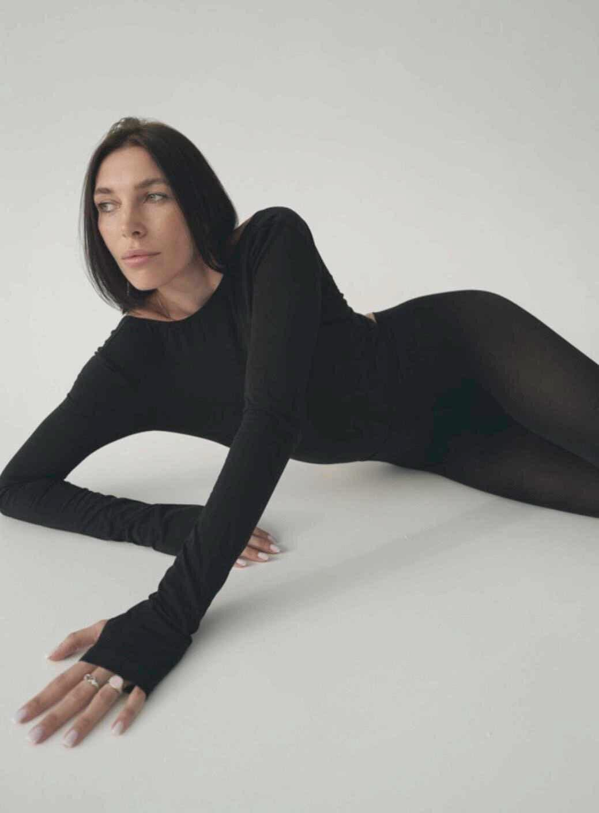
Мои продукты
и услуги
- 01Методическое пособие«Интегративная онкология»
- 02Индивидуальная консультация и сопровождение
- 03Экспресс-консультация для специалистов
- 04Методическое пособие«Гормональный баланс»
- 05Методическое пособие«Всё о щитовидной железе»
- 06Сборник 13 практических кейсов
- 07Тг-канал«Расшифровка анализа органические кислоты в моче»
- 08Тг-канал«Нутрициология с Савельевой»
Немного
обо мне
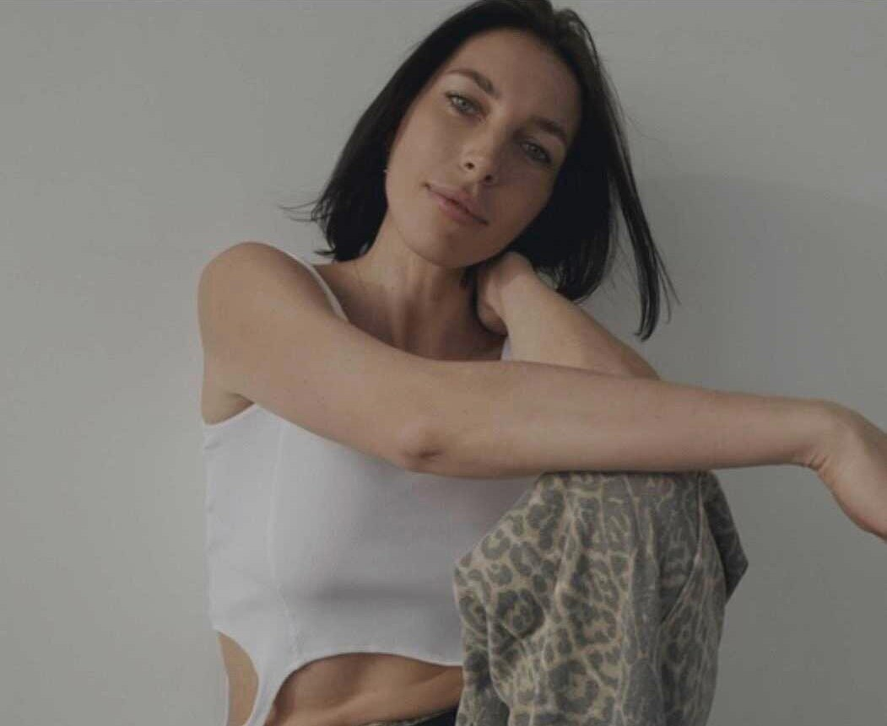
Нутрициолог и health-коуч, практикующий более 8 лет
Спикер, ментор и преподаватель в Академии ЭдПро (EdPro), АБИМЕД (Академия биомедицины и нутрициологии)
Автор курса и методического пособия «Основы гормонального здоровья» (совместно с Сеченовским Университетом и Академией ЭдПро), «Всё о здоровье щитовидной железы»
Автор курса «Интегративная онкология» (совместно с Сеченовским Университетом и Академией ЭдПро)
Автор курса «Нейрохакинг для здорового образа жизни» (совместно с Университетом Пирогова и Академией ЭдПро)
Эксперт в области детоксикационного питания, anti-age менеджмента
Эксперт в сфере комплексного немедикаментозного восстановления здоровья, питания и профилактики заболеваний
А также дипломированный специалист в области патопсихологии пищевого поведения
Образование
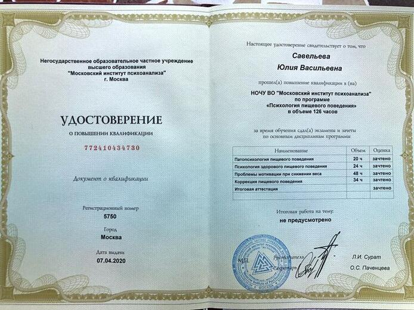
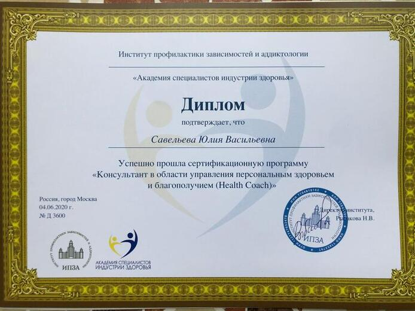
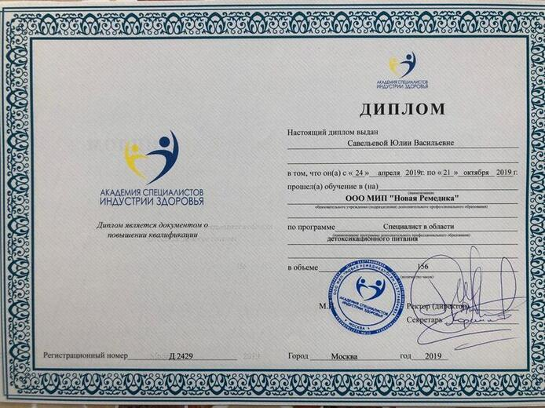
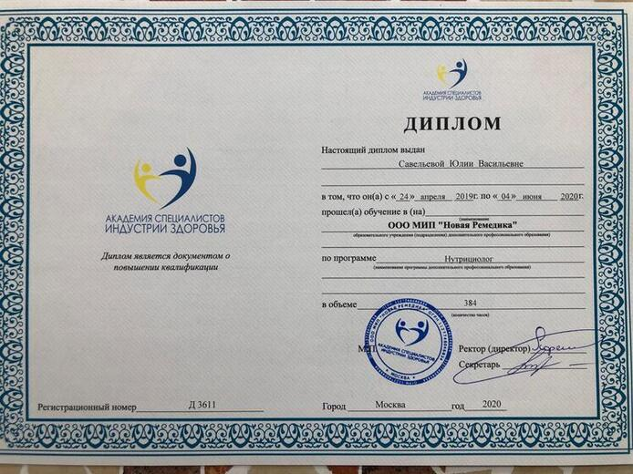
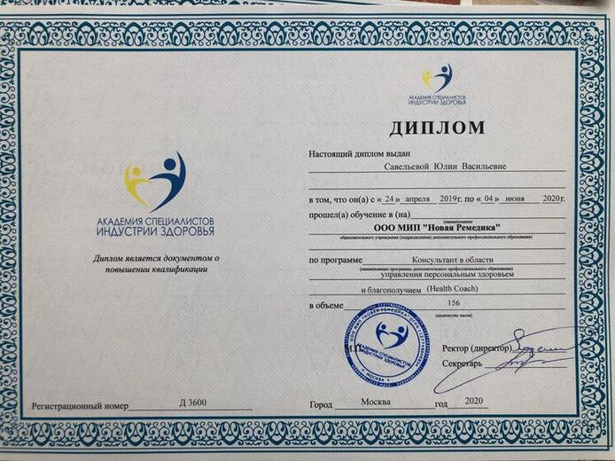
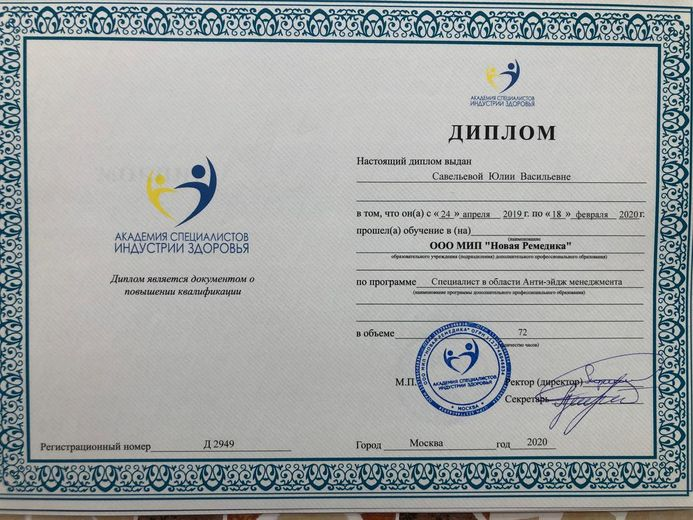
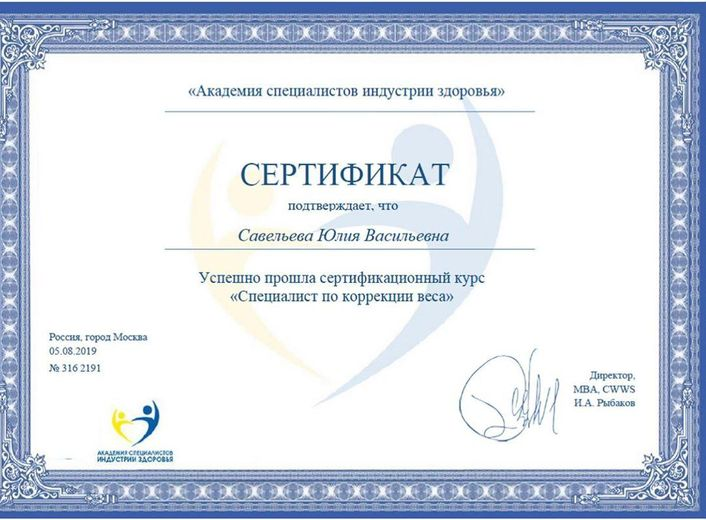
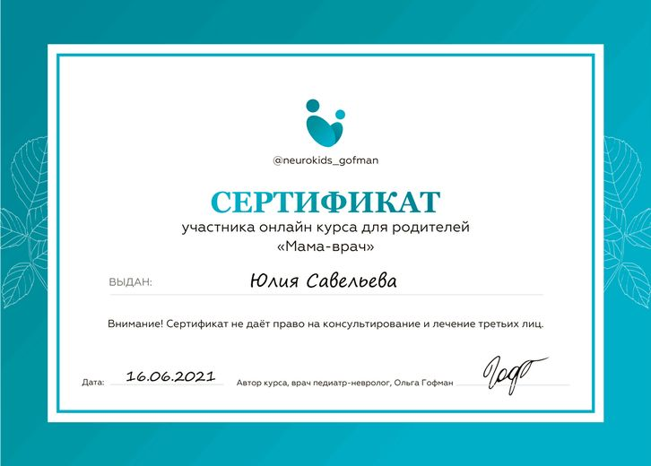
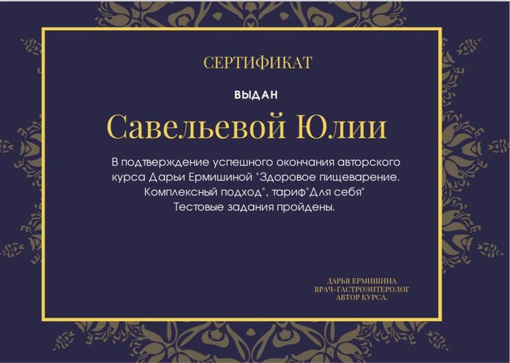
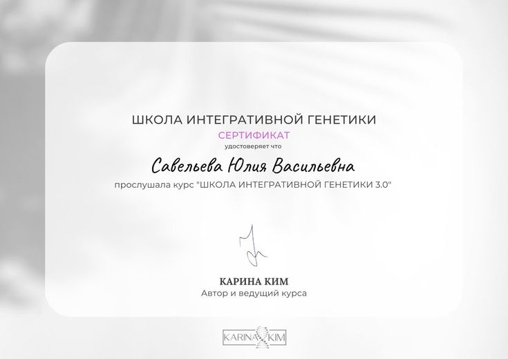
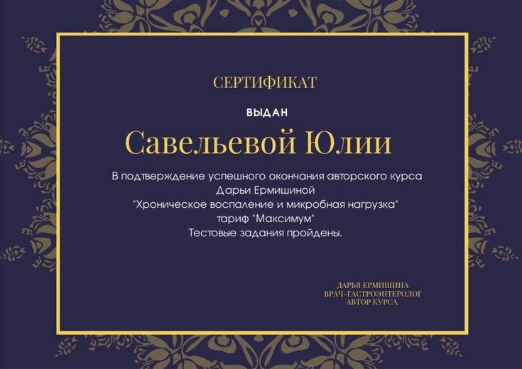
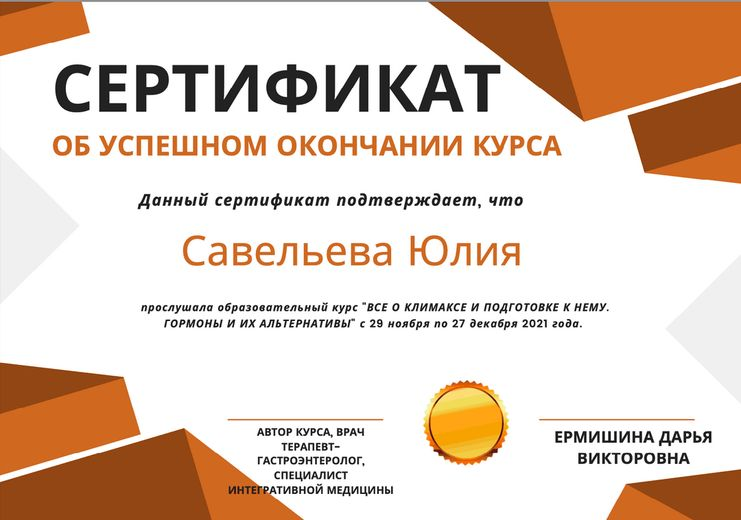
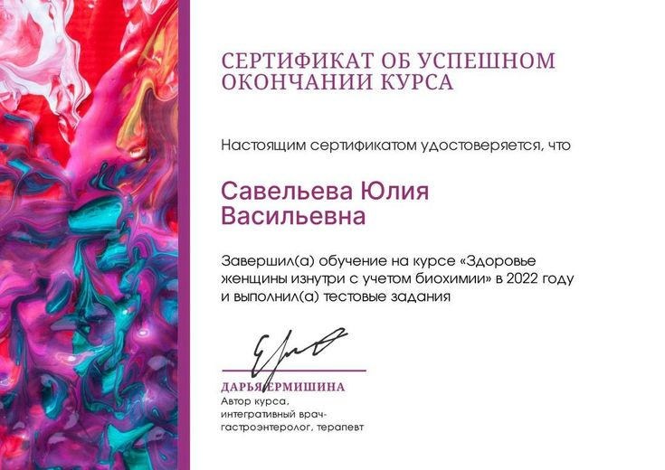
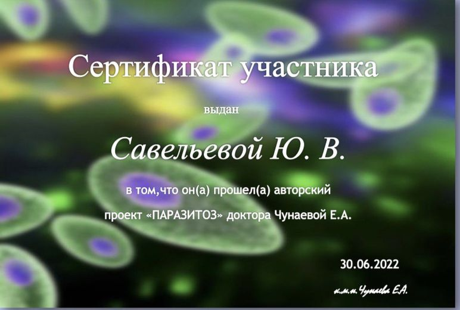
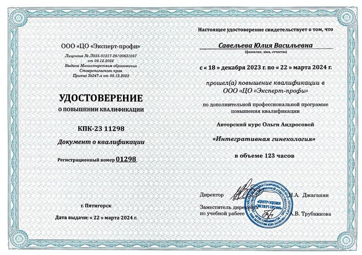
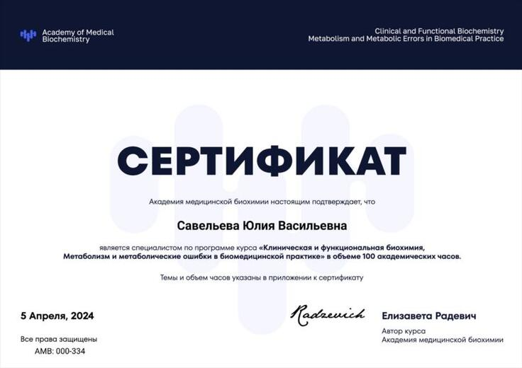
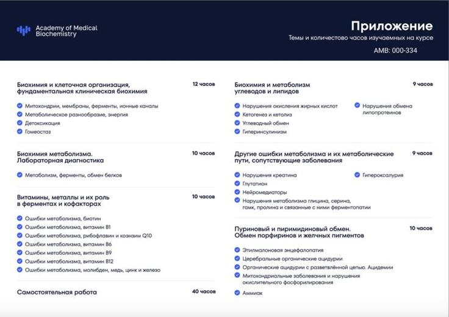
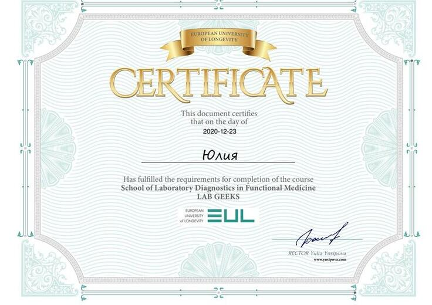
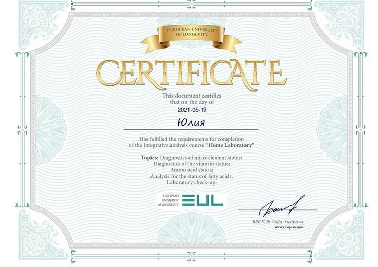
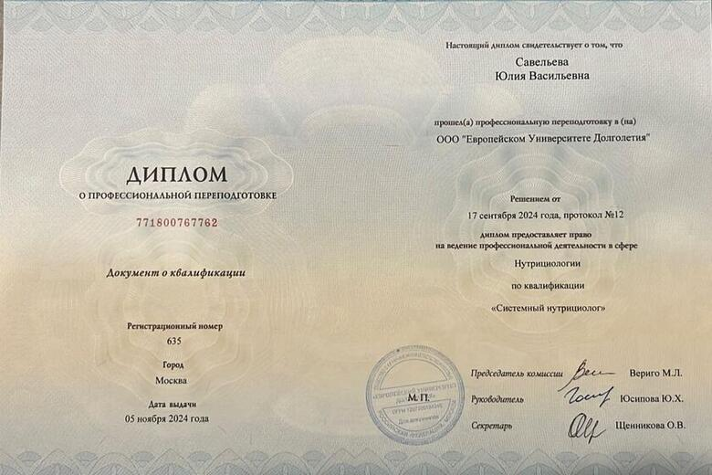
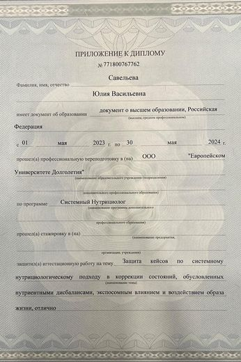
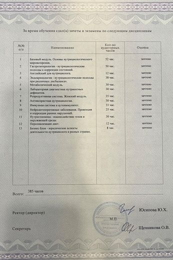
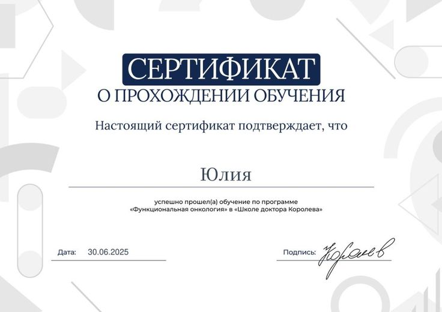
- 2019
АСИЗ (Академия Специалистов Индустрии Здоровья): Диплом «Консультант в области управления персональным здоровьем и благополучием (Health Coach)»; Диплом «Нутрициолог», Диплом «Специалист в области детоксикационного питания», Диплом «Специалист в области Анти-эйдж менеджмента», Сертификат «Специалист по коррекции веса».
- 2019
МИП (Московский Институт Психоанализа): Удостоверение о повышении квалификации по дисциплинам: Патопсихология пищевого поведения, Психология здорового пищевого поведения, Проблемы мотивации при снижении веса, Коррекция пищевого поведения.
- 2020
МИИН (Международный Институт Интегративной Нутрициологии): протоколы лечения и профилактики заболеваний по направлениям: ЖКТ, гормоны, сосуды, иммунитет, а также программы для коррекции веса, анти-эйдж, детокс и проч.
- 2021
Обучающий курс Ольги Гофман «Мама-врач»
- 2021
Обучающий курс Дмитрия Веремеенко «Тераностика старения»
- 2021
Обучающие программы интегративного врача-гастроэнтеролога Дарьи Ермишиной «Хроническое воспаление», «Здоровое пищеварение. Комплексный подход», «Здоровье женщины изнутри с учетом биохимии», «Все о климаксе и подготовке к нему. Гормоны и их альтернативы»
- 2021
Обучающие проекты Виктории Орлинской «Желчь», «Ворсинка (про кишечник)»
- 2022
Обучающий проект Елены Чунаевой «Паразитоз»
- 2022
Обучающий курс «Школа интегративной генетики» (Карина Ким)
- 2021–2025
Обучающие программы European University of Longevity (Юлия Юсипова) «LabGeeks», «NutriGeeks», «Системный нутрициолог»
- 2022
Обучающий курс Academy of Medical Biochemistry «Функциональная и клиническая биохимия»
- 2022
Обучающие курсы Ольги Ковган «Школа эндокринологии», «Уход за кожей», «Инфузионная IV терапия», «Нефрология в практике нутрициолога», «Щитовидная железа», «Нейромедиаторы»
- 2023
Обучающий курс «Менопауза» (Андрей Лобузнов)
- 2023
Обучающий курс «Гормоны 2.0» (Антон Поляков)
- 2024
Обучающие курсы «Полипы и гиперплазия эндометрия», «Эндометриоз и аденомиоз», «Репро: оживи яичники» (Элисо Джобава)
- 2024
Обучающий курс «Женское здоровье 4.0» (Ольга Андросова)
- 2024
Обучающий курс Academy of Medical Biochemistry «Нейроиммунология»
- 2025
«Функциональная онкология» от «Школы доктора Королева»
- 2025
«ПроОнко», Альбика Темирханова